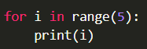
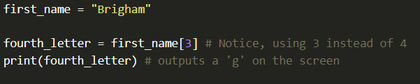

As seen in the videos above, there are a few different ways you can tell the computer to loop through code over and over again.
One example of loop, is to loop, or iterate, through each item of a collection or a list, one at a time. You will learn about lists in more detail in future lessons, but the following shows an example of looping through a list of words to print them on the screen one at a time:
The output of this code is:
Just as with "if" statement, the colon ":" at the end of your "for" statement tells the computer that there is a block of code coming. Then, you indent all the code that is in the block. The code that is indented is the code that will be run on each item.
When looping through each item, you can do much more with it than simply printing it out. You could include an "if" statement, to check if it meets certain conditions, and then use it in a math expression, or anything else.
When you type "for item in items:", the list variable, items must already exist, but the variable for each individual element of the list, in this case item, is defined right in that statement. In short, it's saying, "Go through each element of this list and assign a new variable item to be the value each time through."
It's very common in programming to want to loop through a series of numbers. You could create a list of numbers, just liek the list of words in the last example, like this:
But this could get really long if you wanted to work with a large amount of numbers, so there is an easier way, using "range".
You can create the same list of numbers like this:
This creates a list of numbers for you that starts at "0" and goes up until (but not including) "10".
You could assign this list to a variable like "numbers" as in the example above, and then loop through each number in the list of numbers, but it is more common to just put the "range" code right in your for loop like so:
The output is as follows:
In programming languages we usually start counting at 0 instead of 1. There are reasons for this, but more than anything, it's just something you'll have to get use to.
The "range" function gives you other options like starting at a different number, or counting by 3's, or even going backwards. In all of these cases, the idea of looping through the values is the same. You start with the first one and then continue on, one by one, through the list.
To start with a different number, you provide two values to the "range" function. If you provide two numbers, it will start with the first one and continue up until (but not including) the second one.
If you provide three values to the "range" function, it will use the third number as the "step size" or in other words the number to count by.
A loop will blindly repeat any code that is inside its body. That code could include if statement, mathematics, new variable definitions, or anything else-including other loops!
The following example displats the number 0-4:
Output:
We can add a second, inner loop, that for each one of those displays the numbers 10-12 (with two - characters in front to make it easier to visualize).
Output:

Notice how the inner loop is run every time the outer loop displays it's number. Inner loops can be very helpful in iterating through a two-dimensional structure, such as the pixels in an image.
While we generally prefer variable names that are more descriptie than a single letter, if the variable will only be used for counting in a simple loop it is considered standard to use i. Then, if you have an inner loop, you use j, and a third inner loop would be k. If you have more than three loops you should consider if there is a simpler way to accomplish your task, and if there really isn't, you should at least move to more descriptive variable names at that point.
You can iterate through each letter of a string using either style of for-loop. For example, you can loop through each letter one at a time with the following code:
Output:
Just as before, there is nothing special about the variable name "letter", any name could have been used, but the choice of "letter" helps us keep the code nice and easy to read.
Sometimes you need to access a letter by its position (or index) in a string. In others words, you might want to know the third or seventh letter in a string. This will be useful when comparing letters at the same place in two strings.
You can access a specific letter in a string by using the square brackets "[]", such as "word[3]" or "word[12]". But be aware that the count starts at 0, so you will use 3 to get the fourth letter (not the third letter). The following example gets the fourth letter of the name:
In this case, rather than looping through letters, you can loop through the index numbers. If you knew the length of the word, you could do this as follows:
Output:
Then, you can use the square brackets to access the letter at that index as follows:
This code will output the following:
With this example, you have access to both the letter and the index at each step of the loop.
The previous example assumed the number of letters, or length of the string, would always be 4, but this will not work if the string has no more or fewer letters. Instead of typing the 4 directly, you cal let the computer find the length by using the "len" function. The following code shows how to use "len" to get the length of a string:

The Output:
Combining the "len" function with the earlier loop is very powerful, because now you can iterate through the indexes ad letters of strings of any length as follows:
Code output as follows:
Many of the examples you see with "for" loops often iterate through a list of items, including numbers in a list, or letters in a string. This naturally extends to working woth other properties of lists, such as finding the length of the word or the position of the letter.
Using a for loop and the length of the string is a standard way to access both the index and the letter. However, Python also has a way to access both of these variables directly using a special function called "enumerate" as shown in the following example:
Output of example:
This is a little different than the standard "for" loop, because it returns two variables. This function is not supported in many languages, but it is available in Python.